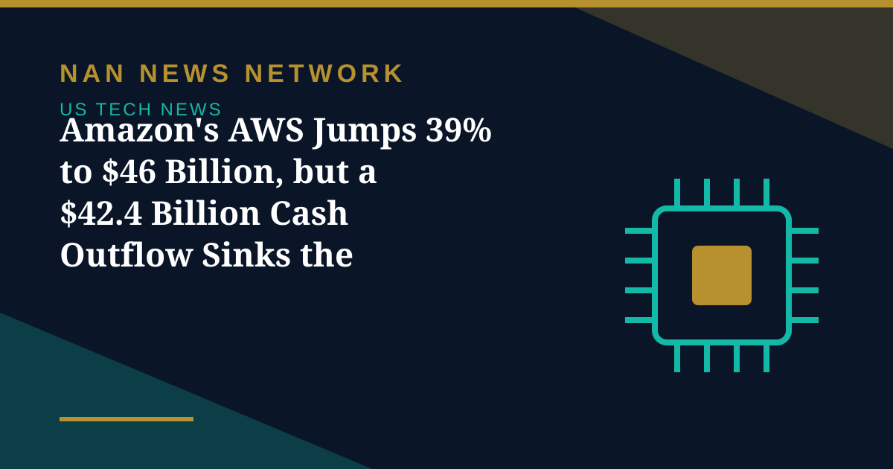

Amazon's AWS Jumps 39% to $46 Billion, but a $42.4 Billion Cash Outflow Sinks the Stock

Amazon reported third-quarter results late on Thursday, October 29, and the market's verdict was swift: shares fell nearly 7% in after-hours trading and about 6% in Friday premarket trading, even as its cloud division posted its fastest growth in nearly five years.
AWS accelerates, the rest of the company lags
Amazon Web Services brought in $46 billion in the quarter ended September 30, up 39.3% from a year earlier and ahead of analyst expectations of about $45.3 billion, according to CNBC. AWS operating income rose 55% to $17.8 billion, putting the business at a $184 billion annual revenue run rate. Chief executive Andy Jassy said AWS could grow more than 40% in both 2027 and 2028.
The wider company was softer. Total sales rose 12% to $201.9 billion, missing expectations of about $202.3 billion, while earnings per share of $1.89 missed the $1.96 consensus. Net income slipped to $20.7 billion from $21.2 billion, mostly because last year's quarter included a $9.5 billion gain on Amazon's Anthropic stake. Amazon said growth would have been about four points higher if Prime Day had not moved into the second quarter.
The cash-flow problem
The deeper worry is spending. Trailing free cash flow swung from a $14.8 billion inflow a year ago to a $42.4 billion outflow, as capital spending reached $75.9 billion in the quarter alone and about $220 billion is expected for the full year. Long-term debt rose to $173.1 billion from $65.6 billion at year-end, while quarterly interest expense more than tripled to $1.69 billion, according to Briefing.com.
For the holiday quarter, Amazon guided to sales of $240 billion to $247 billion, with the midpoint below the $244.5 billion analysts expected, and operating income of $28.5 billion to $33.5 billion. Jassy also said Amazon will sell its Trainium AI chips outside AWS. The pattern now matches the week's other big tech reports: cloud growth is strong, but investors are asking harder questions about who pays for the AI buildout — and when it pays back.
Sources: CNBC, Skimwire, Briefing.com, Economic Times, October 30, 2026
More on US Tech News
- Intel Plunges About 25% as Weak Fourth-Quarter Guidance Overshadows a Third-Quarter Beat
- Microsoft Rises, Alphabet Falls: Free Cash Flow Becomes the AI Earnings Scorecard
- Nvidia Puts $3 Billion Into Meta as AI Partnership Deepens — and 'Circular' Worries Grow
- SK Hynix Profit Jumps More Than Sevenfold as AI Rally Faces Earnings Test
- Judge Orders OpenAI to Disclose Apple Hiring Records in Talent Dispute
- Apple Unveils M6 MacBook Pro and iMac With Faster On-Device AI
- OpenAI Launches GPT-6.1 Terra With Lower API Prices
- Musk Says SpaceX Closed $40 Billion in GPU Debt and Warns of a Neocloud Shakeout
- AI Inference Prices Have Fallen as Much as 80 Percent Since June, Analysis Finds
- White House Names Jay Clayton as AI Czar to Lead 'Super Intelligence Force'
- SpaceX Q3 2026: $14.6 Billion Revenue as Starship Flight 15 Targets a Dual-Stage Catch
- US Orders DeepSeek Stripped From Federal Civilian Systems